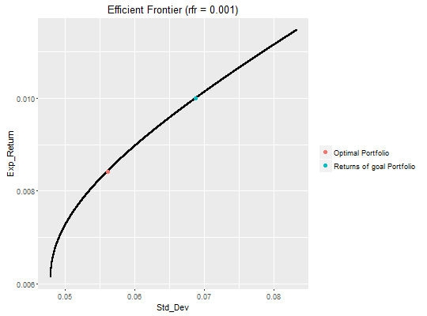

efff(returns, short = "no", max.allocation = NULL, risk.premium.up = 0.9, risk.increment = 1e-04, rg = NA, plot = T, rfr = 0, rounding = NULL)
Efficient Frontier using excess earning rate
Loading required package: quadprog Loading required package: ggplot2 Attaching package: ¡®ggplot2¡¯ The following objects are masked from ¡®package:psych¡¯: %+%, alpha